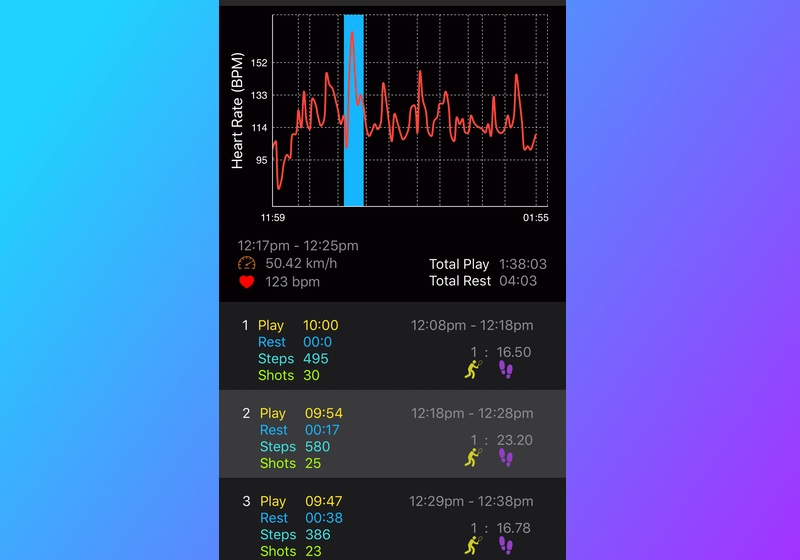
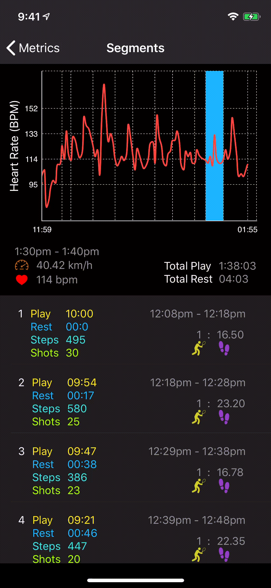

Segments Analysis is a great way to track changes in exercise intensity over the course of your racquet sports session.
See how your heart rate increased when you are running for your shots or watch it decrease when you are taking a break.Understanding your heart rate data can help you improve your court performance and ensure you achieve the right intensity for your workout. See your rest time vs your play time in each segment.  Your heart rate data linked intelligently to your steps and shots
Segmented Heart Rate Analysis
Select a segment you like to see highlighted on the workout, and it will highlight it in blue on the graph. You will see the duration, average heart rate and swing speed for that segment.
 Linked Heart Rate and Segment highlightedIt also works in reverse: select a point on the graph and the segment corresponding to the part of the graph will be highlighted.
You can also see the number of steps and shots for each segment as well as your swing to steps ratio.